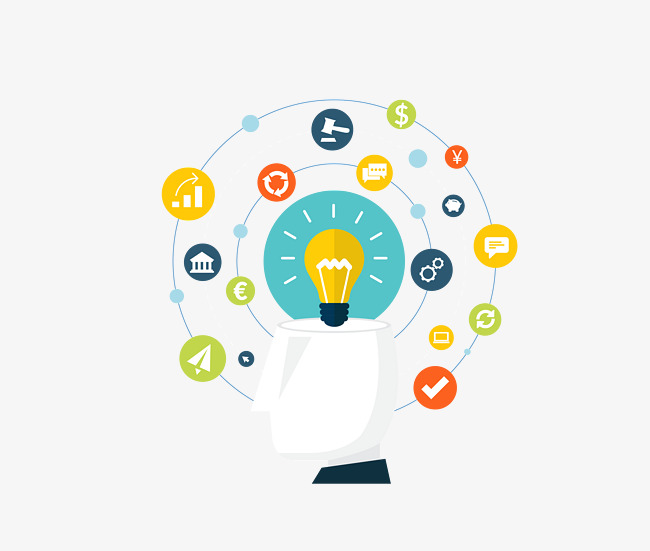

<app-members>
  <div class="container">
    <a routerLink="/diversitate" id="goback">Go back</a>
    <h1>DIVERSITATEA ÎN ECHIPĂ</h1>
    <div>
    <div class="info">
      <h2>De ce o echipă diversă are șanse să devină inovativă?</h2>
      <p>Cu cât mai mulți membri ai echipei aduc perspective diferite - cunoștințe, informații, expertiză - echipei, cu atât mai mare este <b>fondul de resurse informaționale</b> pe care echipa le poate folosi și cu atât este mai mare potențialul de beneficii sinergetice prin integrarea perspectivelor.
        Diversitatea funcțională a echipei a fost pozitiv legată de inovația echipei mediată de procesele echipei de schimb de informații, învățare, motivare și negociere.
        </p>
      <p>De reținut însă că o eterogenitate prea accentuată a grupului poate dăuna stabilirii unui scop comun și diminua înțelegerea grupului asupra sarcinilor.
      </p>
      <p>În cazul în care ne aflăm într-o astfel de situație, merită reținut că stilul de <b>leadership transformațional</b> este un mediator excelent între diversitate și inovație.
      </p>
    </div>
    <div class="img">
        
    </div>
    </div>
  </div>
</app-members>
